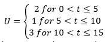
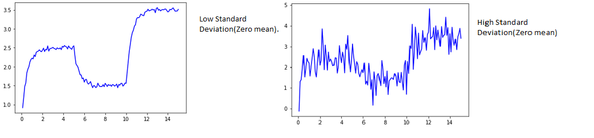
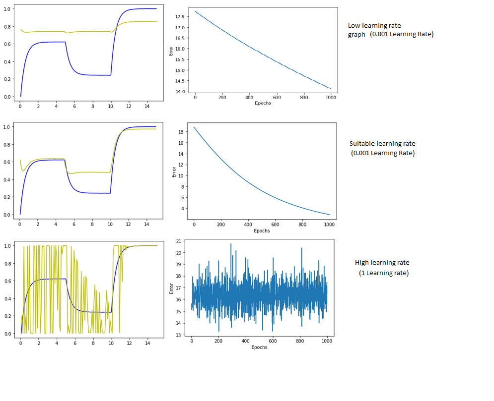
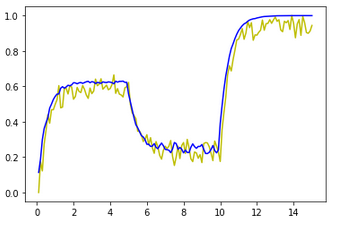

Computational Science; Simulating and tracking a robot in one dimensional space.
Project overview and inspiration.
This project is part of the coursework module Computer Science conducted at the University of Hull. The goal of the project can be broken down into three parts which are:
- Simulate the robot movement in one dimensional space.
- Add white noise to the simulation to mimic real-world noise.
- Track movement of the robot using a perceptron.
Robot Simulation.
The robot model movement is simulated through a simplified equation which is given as x = -2x + 2U. Whereby x is the generalised position of the robot and changes with time while U represents the distance of the robot from the origin. The U value changes with time and can be simplified using the following threshholds:  Step sizes were then considered. Step sizes refers to how much the robot will be able to move per time step. Different step sizes resulted in different simulations. Higher Step sizes made the simulation unstable while lower step sizes stabilized the simulation. However, very low step sizes resulted in heavy computational inefficiency due to alot of calculations done per time step. A sweet spot for step size was then achieved through testing, observing and graphing different step sizes as shown below. The different step sizes tested were:
- 0.001.
- 0.01.
- 0.25.
- 0.5.
- 0.75.
- 1.
Adding white noise.
White noise was then added to the simulation using the Box muller method which is based off a mean and standard deviation to accurately represent data. A higher standard deviation will generate more noise in the simulation while a lower standard deviation will generate less noise. This can be demonstrated in the image below:  A lower standard deviation is preferred in order to train a perceptron to track the robot.
Tracking the robot.
A perceptron is then used to track the movement of the robot. The perceptron attempts to predict the next position of the robot given a timestep. During training and evaluation of the perceptron, different learning rates were tested to determine the optimal learning rate to train the perceptron with. Learning rates determine the rate which the weights in the model are updated. A higher learning rate resulted in perceptron instability while lower learning rates were computationally inneficient because the perceptron took an enormous amount of time to learn to track the robot. A sweet spot was then achieved through testing various learning rates as shown below. Perceptron tracking(Yellow) Robot simulation (Blue).  After training, the perceptron was then tested against "unseen" data. The unseen data was simply the robot simulation but with more noise implemented into the simulation using box muller method. The results were as shown below: Perceptron tracking(Yellow) Robot simulation (Blue). Resources and Libraries used.
The project is coded using Python. The libraries used were:- Numpy.
- Seaborn.
- Pandas.
- Scipy.
- Sklearn.
- Matplotlib.